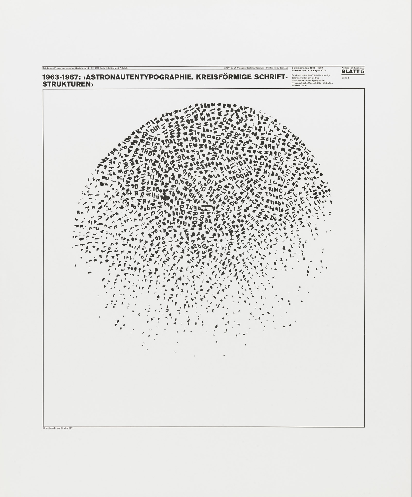
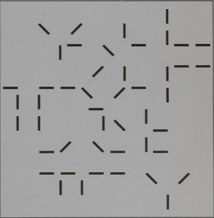
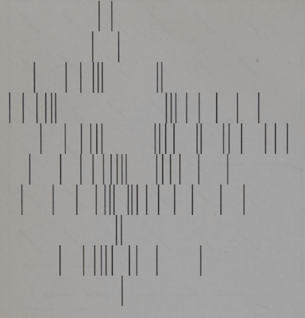
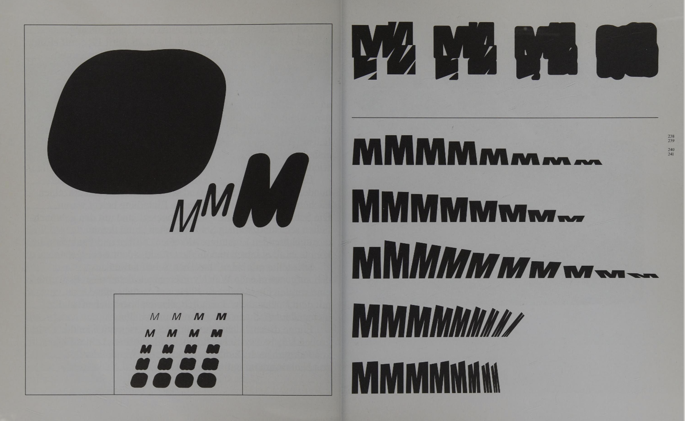
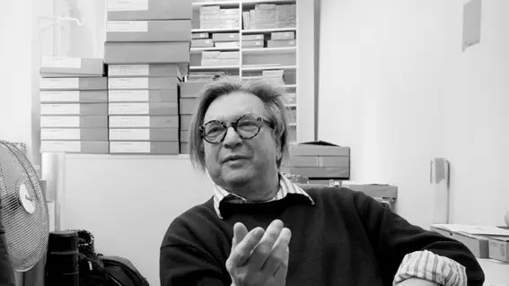

Wolfgang Weingart is known by many as the father of New Age typography. His work has its roots in Swiss Typography, yet it bends the rules and standards of the time to create more experimental work that spawned the New Wave movement. This essay will explore what inspired Weingart’s work and his distinct and influential style.
Life
Wolfgang Weingart was born in February 1941 in a small village in Germany, near the Swiss border. Growing up in the countryside during the end of World War 2, much of his early childhood consisted of sheltering from air raids in the basement, watching nearby towns be destroyed in the distance.
In 1947, Weingart started primary school. He immediately knew school was not for him, constantly getting in trouble for cheating or failing classes throughout his time in school. Around this time he discovered his passion for design when one day while he was out riding his motorbike he crashed into a wire fence, and while bending the wire back into shape he ended up bending it into different shapes such as a house or landscape. This inspired him to start creating things out of various household objects, leading him to be known for his creations in his village.
In 1954 Weingart moved to Lisbon in Portugal for 2 years, where he experienced lots of new cultures and visited a lot of museums. He attended a German school here, but he was more focused on creating art with his new found inspiration from his new environment. Weingart describes his move to Portugal as a turning point in his life as it introduced him to a lot of art and design that was totally new to him and greatly helped him experiment and grow his own personal style.
Education
When Weingart was 17 his parents wanted him to continue his education, so he enrolled in a 2 year art and design course at the Merz Academy in Stuttgart. This was a very unstructured course, which had him completing a different project each week without much help or guidance from the teachers in a variety of subjects ranging from drawing and painting to printing and graphic design.
After finishing his course in 1960, Weingart started an apprenticeship as a typesetter in a print shop in Stuttgart. Here is where he was introduced to Swiss Typography, which was a stark contrast from the German design he was used to, and ended up being a massive influence on his later work. Weingart really enjoyed working at the print shop, as he said the methodical work of setting type by hand reminded him of his childhood removing and replacing parts on his bike.
He met the company's consulting designer, Karl-August Hanke, who quickly became his mentor. Karl encouraged Weingart to explore Swiss typography and to enrol in the Basel school of Design, and even though Weingart knew he probably wouldn’t be a good fit for a more structured and academic course, he decided to listen to him and enrol anyways.
He started attending the Basel School of Design in April 1964. His style greatly developed while he was in Basel, taking inspiration from Swiss design but making it into more of his style.
Work

Some of the works that was most influential in developing Weingarts style are these round compositions he made at his typesetting apprenticeship when he accidentally dropped a case of type on the floor. While picking up the letters he had an idea to arrange them inside a cardboard ring, and he then used this for printing which gave him very interesting results. He managed to print with both sides of his creation which led to him creating two very different designs out of the same material, one showing the letters and the other one showing the underside of the letter presses.


During his time at Basel, Weingart was tasked with creating a lot of designs using just simple lines. He completed these projects in quite a unique way - instead of drawing lines using a pen and a ruler, he drilled 100 L-shaped hooks into a piece of wood. He kept working on his line projects in the typeshop, expanding the techniques he used to whatever other tools he could find there.

The M project is a project where Weingart really experimented with typography for the first time. He completed it while at the Basel school of Design, twisting and contorting the letter into shapes that only sometimes still resembled the original letter, and most of the time completely exited the grid structure that was common at the time. He created these designs by using different sizes of the letter M, some of which he would have to make himself, and taking photos of them from different angles and positions. He found that this gave him way more creative freedom and opportunity than if he had just used the letters themselves instead of the photos.
Teaching
In 1968 Weingart became a teacher at the Basel school of Design, where he taught his students typography. As he never really enjoyed school or learning about the strict rules of Swiss Typography, he always encouraged his students to experiment with typography and create things outside the norm of the time.

His students interpreted his style of typography as “Weingart style” typography, which he did not like or agree with as he was trying to teach them to experiment with their own styles and ideas, not to copy his style of work. He however couldn’t stop his work from being spread around by his students and being called specifically his style of typography, and eventually it spread so far that it became known as “New Wave” typography due to its differences from the more commonly taught Swiss typography of the time.
Conclusion
In conclusion, Wolfgang Weingart has undoubtedly had a huge impact on the world of typography, from experimenting with design that defies grids to starting the New Wave trend. Although he did not enjoy a great amount of his education, it played a big part in developing both his skills as a designer and him as a person. However his focus on developing his skills from a very young age using any tools he could get his hands on to create new things was probably what helped him most to transform both himself and the design world as we know it. He never sought to develop a specific style, but to develop himself and his students as people, and to enable them to make better work and leave behind their own impact on the design world.